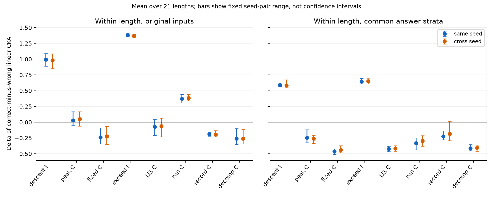
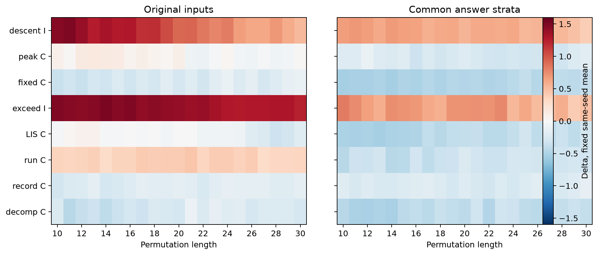
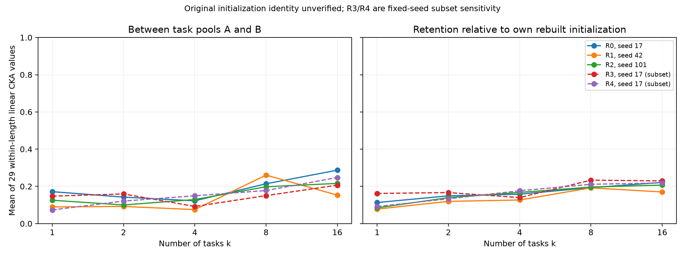

探索性诊断 · 2026-10-09 · 本轮已完成并停止；未启动训练。
主要结论：相对于按原程序重建的初始化参照，两条取逆关系的“正确−错误”差值增量在全部可用种子配对、全部21个长度，以及三种固定指标下均为正。六条补排列关系没有同等稳定的答案控制后增量。这个差异是表征几何的证据，尚不能识别代数计算机制。
初始化限制：98个逻辑模型对应94个独立检查点，全部属于“按原初始化程序重建，但无法直接验证原始权重”；0个拥有直接可验证的原始初始权重，0个因无法重建而被舍弃。没有找到这些模型的step-0权重或初始权重哈希。历史分析代码、模型结构、188-token词表、标准初始化与RNG调用顺序已核对；原训练commit及PyTorch版本未记录，不能把同种子或缓存复现写成初始权重身份已验证。
| 已有产物 | 已完成内容 | 本轮处理 |
|---|---|---|
| neurips 单性质模型 | 16任务×3种子，48个20,000-step检查点；原八关系CKA | 复用权重、配置、检查点SHA与完成标记；不重新训练 |
| specialist_cka_controls | 固定新输入；长度均值控制后合并的CKA、答案分层、重建初始化/独立随机参照、输出/答案几何、32次条件置换、置信度补充 | 复用全部数据和前缀缓存；合并长度统计不替代逐长度主分析 |
| specialist_input_adjustment | 21长度分别计算的普通/输入调整CKA，3同种子，答案控制与初始化比较 | 直接复用同种子数值；最大复算差2.22×10⁻¹⁶ |
| Property32任务数系列 | R0–R4、k=1/2/4/8/16、两池共50模型；4,096固定前缀；原合并长度A/B CKA；seed17/42随机激活 | 复用全部训练缓存；仅对缺失的现有seed101初始化参照做前向提取 |
| 本轮补充 | 跨种子的对应参照、debiased与逐长度置换、共同输入重采样、自身初始化漂移 | 全部独立保存，F17与原CKA目录只读 |
146个缓存抽样检查均通过任务token之前的原始前向：每个specialist条件取10/20/30长度，Property32取2/10/20/30长度；最大绝对误差8.89×10⁻⁶以内。这验证当前程序与缓存取点的一致性，不验证历史原始权重身份。初始化与缺失产物审计；历史源代码/RNG审计；版本与数据来源；逐模型检查点哈希。
状态为final_norm层的<ONE_END>，位于任务提示之前。同一批2,688个测试orbit anchors，长度10–30各128个，逐长度计算后固定取1/21；答案匹配使用原协议的共同标签分层并保留每层≥3的样本。三对同种子与六对有序跨种子分别汇总，每一单元减去对应初始化模型对的差值，未减统一常数。
Δ=(正确−错误)训练后−(正确−错误)对应初始化。Δ是两个CKA差值的差，可超过1；它不是准确率百分点，也不表示正确CKA本身增长相同数值。
| 关系 | 原输入Δ均值 | 答案控制Δ均值 | 答案控制种子中位数 | 同种子Δ范围 | 跨种子Δ均值 | 同种子正长度数 |
|---|---|---|---|---|---|---|
| 下降数—逆下降数（取逆） | +0.994 | +0.589 | +0.577 | [+0.567, +0.622] | +0.582 | 21–21/21 |
| 峰—谷（补排列） | +0.028 | -0.248 | -0.300 | [-0.325, -0.121] | -0.260 | 0–2/21 |
| 不动点—反不动点（补排列） | -0.238 | -0.463 | -0.456 | [-0.511, -0.423] | -0.441 | 0–0/21 |
| 超越数—亏缺数（取逆） | +1.379 | +0.641 | +0.625 | [+0.607, +0.692] | +0.650 | 21–21/21 |
| LIS—LDS（补排列） | -0.072 | -0.425 | -0.429 | [-0.468, -0.379] | -0.415 | 0–0/21 |
| 最长升段—最长降段（补排列） | +0.371 | -0.332 | -0.308 | [-0.437, -0.251] | -0.297 | 0–0/21 |
| 左至右最大纪录—最小纪录（补排列） | -0.189 | -0.224 | -0.255 | [-0.279, -0.139] | -0.184 | 0–1/21 |
| 全局下降—分解块数（补排列） | -0.262 | -0.412 | -0.428 | [-0.453, -0.354] | -0.406 | 0–0/21 |
两条取逆在9种配对×21长度的答案控制下均为正。下降—逆下降的同种子Δ约+0.589，超越—亏缺约+0.641。原输入中最长升/降段的+0.371在答案控制后变为−0.332；峰/谷、LIS/LDS的原输入结果也有种子不一致，不能将全部补排列关系概括为获得训练增量。
这里的“答案控制”是共同标签层内减均值，不是全部输出信息被移除，也不是同一标签的所有样本均不可区分。43–128个anchors/长度被保留；训练模型的概率、置信度、以及输入相关信息仍可能存在。

| 关系 | seed17 | seed42 | seed101 |
|---|---|---|---|
| 下降数—逆下降数（取逆） | +0.622 | +0.577 | +0.567 |
| 峰—谷（补排列） | -0.325 | -0.300 | -0.121 |
| 不动点—反不动点（补排列） | -0.423 | -0.456 | -0.511 |
| 超越数—亏缺数（取逆） | +0.625 | +0.607 | +0.692 |
| LIS—LDS（补排列） | -0.379 | -0.468 | -0.429 |
| 最长升段—最长降段（补排列） | -0.437 | -0.251 | -0.308 |
| 左至右最大纪录—最小纪录（补排列） | -0.279 | -0.139 | -0.255 |
| 全局下降—分解块数（补排列） | -0.453 | -0.428 | -0.354 |
| 关系 | 训练正确 | 训练错误 | 训练恒等 | 初始化正确 | 初始化错误 | 初始化恒等 |
|---|---|---|---|---|---|---|
| 下降数—逆下降数（取逆） | 0.145 | 0.062 | 0.061 | 0.179 | 0.685 | 1.000 |
| 峰—谷（补排列） | 0.297 | 0.047 | 0.197 | 0.696 | 0.198 | 1.000 |
| 不动点—反不动点（补排列） | 0.101 | 0.037 | 0.037 | 0.680 | 0.152 | 1.000 |
| 超越数—亏缺数（取逆） | 0.281 | 0.102 | 0.112 | 0.261 | 0.723 | 1.000 |
| LIS—LDS（补排列） | 0.209 | 0.091 | 0.115 | 0.682 | 0.140 | 1.000 |
| 最长升段—最长降段（补排列） | 0.251 | 0.071 | 0.149 | 0.688 | 0.176 | 1.000 |
| 左至右最大纪录—最小纪录（补排列） | 0.378 | 0.070 | 0.062 | 0.694 | 0.162 | 1.000 |
| 全局下降—分解块数（补排列） | 0.166 | 0.040 | 0.041 | 0.677 | 0.140 | 1.000 |
增量的含义要谨慎：下降—逆下降的正确CKA为0.145，重建初始化为0.179；错误CKA则从0.685降为0.062。它的正Δ主要体现正确/错误相对关系的改变，不能表述成正确配对的绝对相似度全面提高。超越—亏缺的正确CKA从0.261到0.281，而错误从0.723到0.102。恒等配对也完整保留在表中。
| 关系 | 普通CKA Δ | debiased Δ | 固定输入Gram调整 Δ |
|---|---|---|---|
| 下降数—逆下降数（取逆） | +0.589 | +0.657 | +0.547 |
| 峰—谷（补排列） | -0.248 | -0.310 | -0.216 |
| 不动点—反不动点（补排列） | -0.463 | -0.532 | -0.436 |
| 超越数—亏缺数（取逆） | +0.641 | +0.749 | +0.620 |
| LIS—LDS（补排列） | -0.425 | -0.483 | -0.391 |
| 最长升段—最长降段（补排列） | -0.332 | -0.393 | -0.295 |
| 左至右最大纪录—最小纪录（补排列） | -0.224 | -0.275 | -0.201 |
| 全局下降—分解块数（补排列） | -0.412 | -0.471 | -0.381 |
三种指标均保留两取逆/六补排列的均值方向；两取逆所有种子配对和每个长度仍为正。U-centered指标是预定的敏感性检查，答案层残差使样本相互依赖，因此不声称它是无偏条件总体估计。输入调整沿用单一位置排列矩阵核、Gram回归与PSD截断；只排除这个特定核捕捉的成分，不能排除全部输入混杂。
每个长度上，位置排列矩阵输入Gram对恒等、取逆、补排列的CKA都为1，故输入核的正确−错误差值为0；数值序列核的补排列CKA也为1（固定长度补值是正交符号翻转加常数），取逆不同。不同输入核含义已固定，未根据结果搜索核。原始输入对照表。
真实答案one-hot在所有关系的正确变换CKA均为1，错误约0.018–0.047，说明输出关联本身能产生很强的正确配对优势。答案共同分层后纯真值编码的方差为0，CKA记为未定义，未填0。输出概率仍可复现取逆的正Δ：同种子约+0.336和+0.331。隐藏CKA数值更高并不能单独证明有额外机制。答案/输出基线；逐长度基线。
32次原协议的层内置换使用相同排列同步处理训练与初始化、正确与错误。长度内计算后固定加权，两个取逆的答案控制Δ均超过全部32次打乱结果（同种子打乱Δ最大约0.008和0.030）；描述性上尾秩为1/33。置换控制也会打断输入对应，不能据此证明数学机制；不作为新的确认检验。置换汇总。

移除任意一个长度后，两条取逆全部配对、三指标的答案控制均值仍为正：下降—逆下降范围[0.505, 0.753]，超越—亏缺范围[0.562, 0.823]。留一长度完整结果。
八种关系是固定研究对象，含两取逆和六补排列；它们共享输入、对称轨道和变换类型。三个源种子、六个交叉配对不增加独立关系数量。R0/R3/R4也共享seed17；这些不是五个独立数据世界。源/种子范围只描述这些源模型变化，留一关系只描述固定关系集合的敏感性。
普通CKA同种子宏平均Δ为+0.251，但关系中位数为−0.022；答案控制后宏均值−0.109、中位数−0.290。留掉任何单关系时，答案控制宏均值都为负（−0.217至−0.059）。因此不能把两个强取逆结果写成数学关系整体普遍提高对齐。固定变换家族汇总；关系均值/中位数。
| 省略关系 | 控制 | 剩余均值 | 剩余中位数 |
|---|---|---|---|
| 下降数—逆下降数（取逆） | length | +0.145 | -0.072 |
| 峰—谷（补排列） | length | +0.283 | -0.072 |
| 不动点—反不动点（补排列） | length | +0.321 | +0.028 |
| 超越数—亏缺数（取逆） | length | +0.090 | -0.072 |
| LIS—LDS（补排列） | length | +0.298 | +0.028 |
| 最长升段—最长降段（补排列） | length | +0.234 | -0.072 |
| 左至右最大纪录—最小纪录（补排列） | length | +0.314 | +0.028 |
| 全局下降—分解块数（补排列） | length | +0.325 | +0.028 |
| 下降数—逆下降数（取逆） | answer_strata | -0.209 | -0.332 |
| 峰—谷（补排列） | answer_strata | -0.089 | -0.332 |
| 不动点—反不动点（补排列） | answer_strata | -0.059 | -0.248 |
| 超越数—亏缺数（取逆） | answer_strata | -0.217 | -0.332 |
| LIS—LDS（补排列） | answer_strata | -0.064 | -0.248 |
| 最长升段—最长降段（补排列） | answer_strata | -0.077 | -0.248 |
| 左至右最大纪录—最小纪录（补排列） | answer_strata | -0.093 | -0.332 |
| 全局下降—分解块数（补排列） | answer_strata | -0.066 | -0.248 |
输入抽样使用256次按长度分层的配对orbit-anchor重采样；同一索引用于所有关系/条件/种子，保留共享输入带来的依赖。输出保存重采样标准差、偏移和百分位。重复抽样会改变有限样本CKA的对角项权重，当前高维数据的重采样分布与原估计明显偏移；这些百分位明确作为描述性抽样敏感性，不能当作无偏总体置信区间，也没有据其显著性筛选关系。输入重采样的标准差与偏移。
全部R0–R4、两池、五个k，共50个既有模型。固定原4,096个前缀，长度2–30分别计算，主分析固定1/29；原合并长度数值作为独立对照。A/B的重建初始参数在每组每个k都相同，原始训练起点是否比特相同仍无直接证据。共享初始化审计。

| 划分 / seed | k1：池间 / 自初始化 | k2 | k4 | k8 | k16 |
|---|---|---|---|---|---|
| R0 / 17 | 0.172 / 0.113 | 0.142 / 0.149 | 0.122 / 0.158 | 0.214 / 0.193 | 0.287 / 0.221 |
| R1 / 42 | 0.090 / 0.078 | 0.092 / 0.119 | 0.075 / 0.127 | 0.261 / 0.192 | 0.153 / 0.170 |
| R2 / 101 | 0.125 / 0.084 | 0.100 / 0.140 | 0.129 / 0.168 | 0.198 / 0.196 | 0.216 / 0.207 |
| R3 / 17 | 0.147 / 0.162 | 0.159 / 0.167 | 0.092 / 0.140 | 0.150 / 0.234 | 0.207 / 0.229 |
| R4 / 17 | 0.073 / 0.092 | 0.121 / 0.133 | 0.149 / 0.176 | 0.178 / 0.211 | 0.247 / 0.219 |
从k1到k16，五组的平均自身初始化CKA都上升，R0/R1/R2分别为0.113→0.221、0.078→0.170、0.084→0.207。R0、R2、R4各相邻步骤都上升；R1从k8到k16下降，R3也有下降。因此支持“更多任务通常伴随更强的初始几何保留”的探索性线索，不支持普遍单调。两池相似度的轨迹也不完全单调，两类相似度不能精确分解学习与保留的贡献。
合并长度会改变结论的量级：R0的k8池间CKA原值0.803，逐长度主分析为0.214；其平均自身初始化CKA合并为0.740，逐长度为0.193。两项同时较高提供保留长度/初始几何的线索，但不能仅用这两项精确归因。最短长度有重复输入：n2只有2个唯一排列（143条记录），n3只有6个，n4只有24个；n2秩一几何可产生CKA天花板。全部长度按固定权重保留，未据结果剔除。合并长度对照；重复输入审计。
11,497项数值比较通过：feature-space CKA复核、独立无偏HSIC公式复核、显式重采样与加权Gram一致性、逐单元Δ/等长度权重、原k系列数值复现与初始化身份标签检查。最大误差1.33e-15。1,214个受保护文件SHA保持不变，Git HEAD与已跟踪工作树保持不变。F17论文、结果、发布资产与原CKA产物均未改动。验证记录。
可复现代码及审计全部位于本目录。运行步骤与产物索引；固定分析口径；全部9,072行逐单元CKA/Δ；50模型自身初始化逐长度表；任务数系列逐长度表。CSV提供完整原始数值，不以报告中的四舍五入数据替代。
已按要求停止。没有新增模型训练、种子、任务、编码实验、零空间实验或有限域/GELU组合实验。